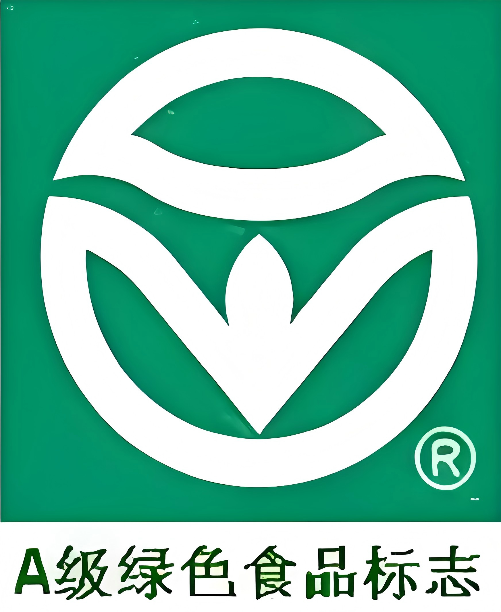
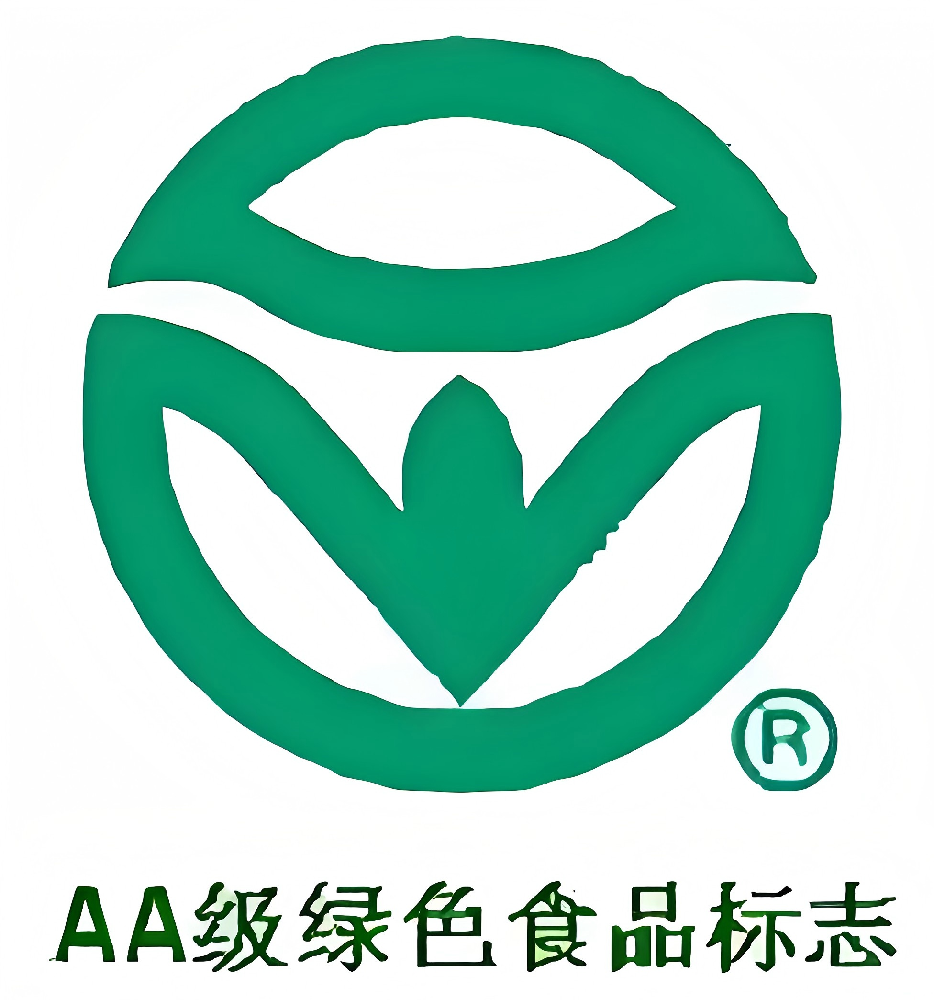

A
GREEN FOOD
A级绿色食品
在符合规定生态环境标准的产地生产，允许按照相关标准限量使用限定的化学合成生产资料，并要求生产过程和产品质量符合A级绿色食品相关标准。
INFORMATION 02 · GREEN FOOD CERTIFICATION
绿色食品是指产自优良生态环境、按照绿色食品标准生产、实行全程质量控制，并依法获得绿色食品标志使用权的安全、优质食用农产品及相关产品。
本页面浏览时长将被记录。您可以随时返回信息首页或继续问卷，无需等待。
绿色食品标志是经核准后在符合相应标准的产品上使用的标志。相关产品需要满足产地环境、生产过程和产品质量等方面的要求，并按照规定经过审核、检测等程序。标志的使用应以依法获得的授权为准。
根据绿色食品相关标准及生产过程中对化学合成生产资料的使用要求，绿色食品认证分为A级和AA级两个等级。

GREEN FOOD
在符合规定生态环境标准的产地生产，允许按照相关标准限量使用限定的化学合成生产资料，并要求生产过程和产品质量符合A级绿色食品相关标准。

GREEN FOOD
按照AA级绿色食品相关标准进行生产和管理，对化学合成生产资料的使用有更严格的要求，生产过程和产品质量须符合相应标准。
| 比较维度 | A级 | AA级 |
|---|---|---|
| 认证标准 | 符合A级相关标准 | 符合AA级相关标准 |
| 生产资料使用 | 允许限量使用限定的化学合成生产资料 | 按照标准执行更严格的限制 |
| 认证要求 | 符合相应环境、生产和产品质量要求 | 符合更严格的相应标准要求 |
注：具体认证要求以现行绿色食品标准和认证管理规定为准。绿色食品认证不应直接等同于有机产品认证。页面中的A级、AA级标志图片按研究者提供的图样展示，正式调查前请核实图片版本及使用授权。